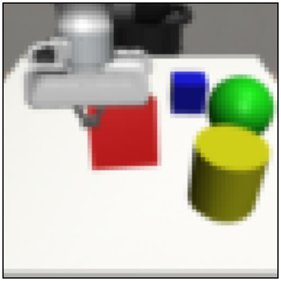
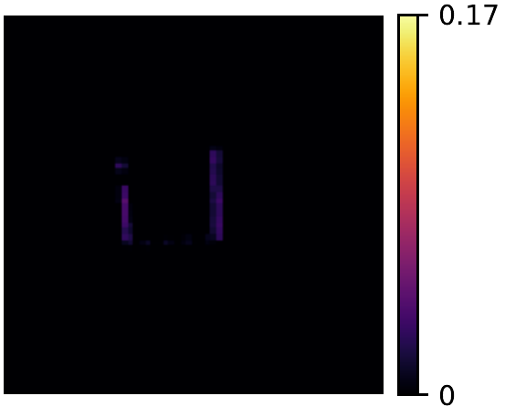
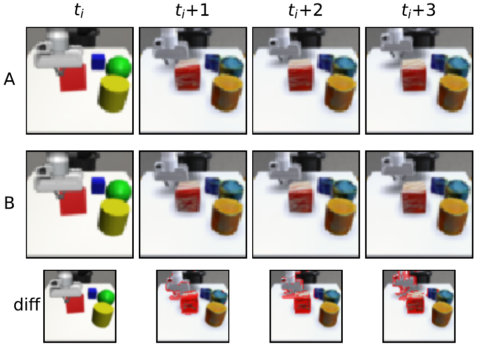

Predictive Sensitivity Across Contact Transitions in a Video World Model
KTH Royal Institute of Technology
NeurIPS 2026 Workshop on Physical Understanding for Decision-Making
Video presentation (3:34)
Abstract
We study how iVideoGPT changes its predicted continuation after a millimetre-scale perturbation to a robot-pushing state. At contact onset and release, we restore an exact simulator state, shift only the manipulated cube, hold the remaining prefix and future actions fixed, and compare the two generated futures. Sensitivity rises through onset and falls through release. At a fixed pre-event offset, the release-approach effect independently replicates, whereas the analogous onset estimate does not. This exposes temporal structure that nominal rollout error alone does not reveal.
Method
At a chosen event-relative time, we restore the exact logged MuJoCo state twice. The first restoration produces the original intervention frame. The second moves only the manipulated cube laterally by a calibrated 0.5-5 mm before rendering. The table, Panda arm, camera, object orientations, and velocities are held fixed.


The raw-difference map makes the small, localized input change visible; the displacement is calibrated to alter 2-5 of the 16 injection tokens. The two frames are then tokenized and placed into otherwise identical autoregressive prefixes. iVideoGPT greedily generates three future frames per prefix, and mean token-Hamming divergence across those futures is the local predictive-sensitivity score.

Results
The event-centred sweep shows opposing sensitivity profiles around the two contact transitions. The onset profile rises through the event window, whereas the release profile falls through it. Shaded regions show 95% episode-cluster bootstrap intervals.


Three frames before contact release, the model was more sensitive to a small change in the cube's position than during comparable matched free-motion windows.
Difference in predictive sensitivity: +2.53 differing tokens per predicted frame (95% CI: +1.61 to +3.53).
Estimated from matched release-approach and free-motion windows, adjusted for injection Hamming distance; the interval uses an episode-cluster bootstrap.
The analogous onset estimate does not independently replicate at that fixed offset. The full sweep explains the contrast: this offset lies on the lower side of onset's rising profile and the higher side of release's falling profile.
Citation
@inproceedings{abbas2026predictive,
title = {Predictive Sensitivity Across Contact Transitions in a Video World Model},
author = {Abbas, Mohammed},
booktitle = {NeurIPS 2026 Workshop on Physical Understanding for Decision-Making: Bridging Foundation Models and Reliable Agents},
year = {2026},
url = {https://openreview.net/forum?id=gVEyYKFVac}
}